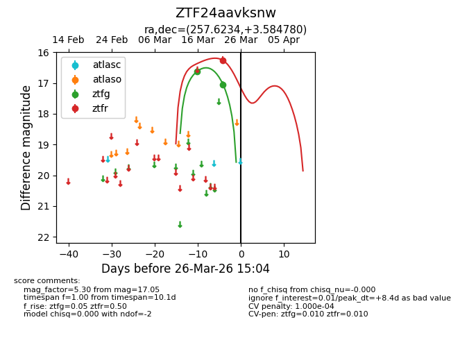
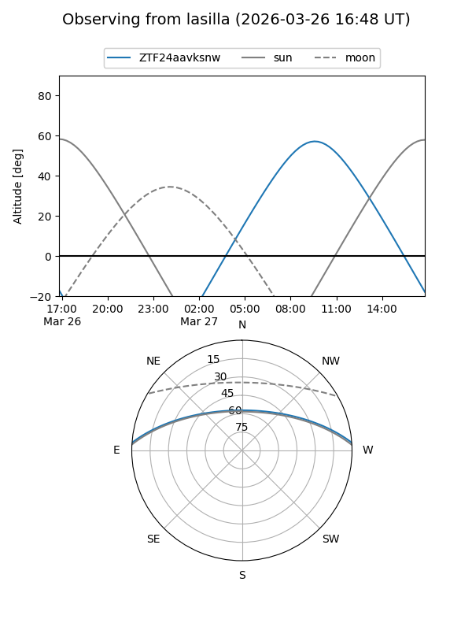
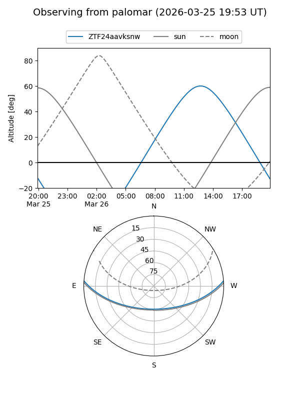
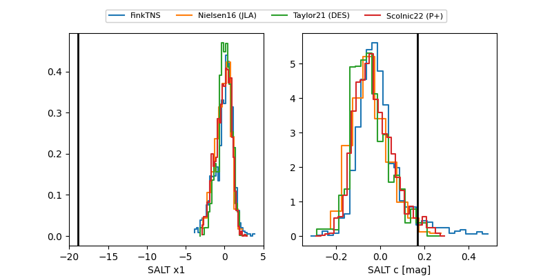

ZTF24aavksnw
Target ZTF24aavksnw at 2026-03-26 15:06
Aliases and brokers:
FINK: link
Lasair: link
ALeRCE: link
alt names
ZTF24aavksnw (ztf,fink_ztf)
Coordinates:
equatorial (ra, dec) = 257.6234,+3.58478
equatorial (HMS+DMS) = 17:10:29.61,+03:35:05.21
galactic (l, b) = (24.2174,+24.02993)
Flags:
likely cv
Photometry:
last ztfg=17.05, ztfr=16.26
2 ztfg, 1 ztfr detections
Lightcurve

Visibility


Additional plots
